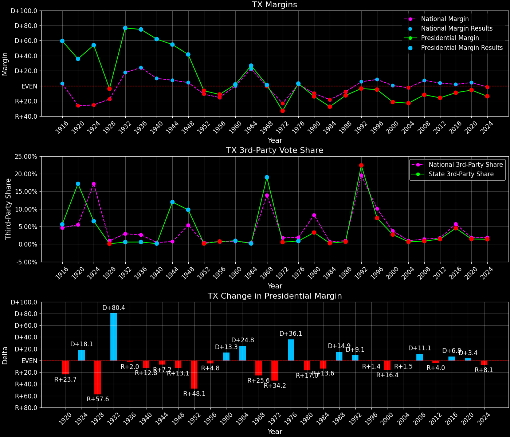

Texas (TX) — Statewide

Margins · 3rd-Party share · Pres. deltas

Relative margins · Relative 3rd-Party · Rel. deltas
Texas (TX) — Total Data
| Year | EVs | D | R | State Margin | Nat. Margin | Rel. Margin | Total votes |
|---|---|---|---|---|---|---|---|
| 1968 | 25 | 1,266,804(41.1%) | 1,227,844(39.9%) | D+1.3 | R+0.7 | D+2.0 | 3,079,406 |
| 1972 | 26 | 1,154,291(33.2%) | 2,298,896(66.2%) | R+33.0(Δ R+34.2) | R+23.1(Δ R+22.4) | R+9.8(Δ R+11.8) | 3,472,714 |
| 1976 | 26 | 2,082,319(51.1%) | 1,953,300(48.0%) | D+3.2(Δ D+36.1) | D+2.1(Δ D+25.2) | D+1.1(Δ D+10.9) | 4,071,884 |
| 1980 | 26 | 1,881,147(41.4%) | 2,510,705(55.3%) | R+13.9(Δ R+17.0) | R+9.7(Δ R+11.8) | R+4.1(Δ R+5.2) | 4,541,637 |
| 1984 | 29 | 1,949,276(36.1%) | 3,433,428(63.6%) | R+27.5(Δ R+13.6) | R+18.2(Δ R+8.5) | R+9.3(Δ R+5.2) | 5,397,571 |
| 1988 | 29 | 2,352,748(43.3%) | 3,036,829(56.0%) | R+12.6(Δ D+14.9) | R+7.7(Δ D+10.5) | R+4.9(Δ D+4.4) | 5,427,410 |
| 1992 | 32 | 2,281,815(37.1%) | 2,496,071(40.6%) | R+3.5(Δ D+9.1) | D+5.6(Δ D+13.3) | R+9.0(Δ R+4.2) | 6,154,018 |
| 1996 | 32 | 2,459,683(43.8%) | 2,736,167(48.8%) | R+4.9(Δ R+1.4) | D+8.5(Δ D+3.0) | R+13.4(Δ R+4.4) | 5,611,644 |
| 2000 | 32 | 2,433,746(38.0%) | 3,799,639(59.3%) | R+21.3(Δ R+16.4) | D+0.5(Δ R+8.0) | R+21.8(Δ R+8.4) | 6,407,637 |
| 2004 | 34 | 2,832,704(38.2%) | 4,526,917(61.1%) | R+22.9(Δ R+1.5) | R+2.5(Δ R+3.0) | R+20.4(Δ D+1.4) | 7,410,765 |
| 2008 | 34 | 3,528,633(43.7%) | 4,479,328(55.5%) | R+11.8(Δ D+11.1) | D+7.3(Δ D+9.7) | R+19.0(Δ D+1.4) | 8,077,795 |
| 2012 | 38 | 3,308,124(41.4%) | 4,569,843(57.2%) | R+15.8(Δ R+4.0) | D+3.9(Δ R+3.4) | R+19.6(Δ R+0.6) | 7,993,851 |
| 2016 | 38 | 3,877,868(43.2%) | 4,685,047(52.2%) | R+9.0(Δ D+6.8) | D+2.1(Δ R+1.8) | R+11.1(Δ D+8.5) | 8,969,226 |
| 2020 | 38 | 5,259,126(46.5%) | 5,890,347(52.1%) | R+5.6(Δ D+3.4) | D+4.5(Δ D+2.4) | R+10.0(Δ D+1.1) | 11,315,056 |
| 2024 | 40 | 4,835,250(42.5%) | 6,393,597(56.1%) | R+13.7(Δ R+8.1) | R+1.5(Δ R+5.9) | R+12.2(Δ R+2.2) | 11,388,674 |
Column explanations
- Δ
- Change (delta) in the value from the previous election year.
- Year
- Election year.
- EVs
- Number of electoral votes allocated to this state or unit.
- D
- Number of votes for the Democratic candidate (raw count(pct%)).
- R
- Number of votes for the Republican candidate (raw count(pct%)).
- State Margin
- Margin between the two major-party candidates, including third-party votes ((D - R)/total).
- Nat. Margin
- The national presidential margin for that year, including third-party votes ((D_total - R_total)/total_votes).
- Rel. Margin
- The presidential margin relative to the national presidential margin (Margin - Nat. Margin).
- Total votes
- Total voter turnout or ballots cast (when provided).
Texas (TX) — Third-Party Data
| Year | D | R | Other votes | State 3rd-Party Share | 3rd-Party Nat. Share | 3rd-Party Rel. Share |
|---|---|---|---|---|---|---|
| 1968 | 1,266,804(41.1%) | 1,227,844(39.9%) | 584,758(19.0%) | 18.99% | 13.86% | 5.13% |
| 1972 | 1,154,291(33.2%) | 2,298,896(66.2%) | 19,527(0.6%) | 0.56% | 1.80% | -1.24% |
| 1976 | 2,082,319(51.1%) | 1,953,300(48.0%) | 36,265(0.9%) | 0.89% | 1.90% | -1.01% |
| 1980 | 1,881,147(41.4%) | 2,510,705(55.3%) | 149,785(3.3%) | 3.30% | 8.24% | -4.94% |
| 1984 | 1,949,276(36.1%) | 3,433,428(63.6%) | 14,867(0.3%) | 0.28% | 0.67% | -0.39% |
| 1988 | 2,352,748(43.3%) | 3,036,829(56.0%) | 37,833(0.7%) | 0.70% | 0.98% | -0.28% |
| 1992 | 2,281,815(37.1%) | 2,496,071(40.6%) | 1,376,132(22.4%) | 22.36% | 19.55% | 2.81% |
| 1996 | 2,459,683(43.8%) | 2,736,167(48.8%) | 415,794(7.4%) | 7.41% | 10.05% | -2.64% |
| 2000 | 2,433,746(38.0%) | 3,799,639(59.3%) | 174,252(2.7%) | 2.72% | 3.75% | -1.03% |
| 2004 | 2,832,704(38.2%) | 4,526,917(61.1%) | 51,144(0.7%) | 0.69% | 1.00% | -0.31% |
| 2008 | 3,528,633(43.7%) | 4,479,328(55.5%) | 69,834(0.9%) | 0.86% | 1.42% | -0.56% |
| 2012 | 3,308,124(41.4%) | 4,569,843(57.2%) | 115,884(1.4%) | 1.45% | 1.73% | -0.28% |
| 2016 | 3,877,868(43.2%) | 4,685,047(52.2%) | 406,311(4.5%) | 4.53% | 5.73% | -1.20% |
| 2020 | 5,259,126(46.5%) | 5,890,347(52.1%) | 165,583(1.5%) | 1.46% | 1.84% | -0.38% |
| 2024 | 4,835,250(42.5%) | 6,393,597(56.1%) | 159,827(1.4%) | 1.40% | 1.88% | -0.48% |
Column explanations
- Year
- Election year.
- D
- Number of votes for the Democratic candidate (raw count(pct%)).
- R
- Number of votes for the Republican candidate (raw count(pct%)).
- Other votes
- Number of votes for third-party (other) candidates (raw count(pct%)).
- State 3rd-Party Share
- Share of the vote received by third-party (other) candidates.
- 3rd-Party Nat. Share
- The national third-party share for that year (3rd-Party votes / total votes).
- 3rd-Party Rel. Share
- Third-party share relative to the national third-party share (3rd-Party share - Nat. 3rd-Party share).

Two-party margins · relative · deltas
Texas (TX) — Two-Party Data
| Year | EVs | D | R | 2-Party Margin | 2-Party Nat. Margin | 2-Party Rel. Margin |
|---|---|---|---|---|---|---|
| 1968 | 25 | 1,266,804(50.8%) | 1,227,844(49.2%) | D+1.6 | R+0.8 | D+2.4 |
| 1972 | 26 | 1,154,291(33.4%) | 2,298,896(66.6%) | R+33.1(Δ R+34.7) | R+23.6(Δ R+22.8) | R+9.6(Δ R+11.9) |
| 1976 | 26 | 2,082,319(51.6%) | 1,953,300(48.4%) | D+3.2(Δ D+36.3) | D+2.1(Δ D+25.7) | D+1.1(Δ D+10.7) |
| 1980 | 26 | 1,881,147(42.8%) | 2,510,705(57.2%) | R+14.3(Δ R+17.5) | R+10.6(Δ R+12.7) | R+3.7(Δ R+4.8) |
| 1984 | 29 | 1,949,276(36.2%) | 3,433,428(63.8%) | R+27.6(Δ R+13.2) | R+18.3(Δ R+7.7) | R+9.2(Δ R+5.5) |
| 1988 | 29 | 2,352,748(43.7%) | 3,036,829(56.3%) | R+12.7(Δ D+14.9) | R+7.8(Δ D+10.5) | R+4.9(Δ D+4.3) |
| 1992 | 32 | 2,281,815(47.8%) | 2,496,071(52.2%) | R+4.5(Δ D+8.2) | D+6.9(Δ D+14.7) | R+11.4(Δ R+6.5) |
| 1996 | 32 | 2,459,683(47.3%) | 2,736,167(52.7%) | R+5.3(Δ R+0.8) | D+9.5(Δ D+2.6) | R+14.8(Δ R+3.4) |
| 2000 | 32 | 2,433,746(39.0%) | 3,799,639(61.0%) | R+21.9(Δ R+16.6) | D+0.5(Δ R+8.9) | R+22.4(Δ R+7.7) |
| 2004 | 34 | 2,832,704(38.5%) | 4,526,917(61.5%) | R+23.0(Δ R+1.1) | R+2.5(Δ R+3.0) | R+20.5(Δ D+1.9) |
| 2008 | 34 | 3,528,633(44.1%) | 4,479,328(55.9%) | R+11.9(Δ D+11.1) | D+7.4(Δ D+9.9) | R+19.2(Δ D+1.3) |
| 2012 | 38 | 3,308,124(42.0%) | 4,569,843(58.0%) | R+16.0(Δ R+4.1) | D+3.9(Δ R+3.4) | R+19.9(Δ R+0.7) |
| 2016 | 38 | 3,877,868(45.3%) | 4,685,047(54.7%) | R+9.4(Δ D+6.6) | D+2.2(Δ R+1.7) | R+11.7(Δ D+8.3) |
| 2020 | 38 | 5,259,126(47.2%) | 5,890,347(52.8%) | R+5.7(Δ D+3.8) | D+4.5(Δ D+2.3) | R+10.2(Δ D+1.5) |
| 2024 | 40 | 4,835,250(43.1%) | 6,393,597(56.9%) | R+13.9(Δ R+8.2) | R+1.5(Δ R+6.0) | R+12.4(Δ R+2.2) |
Column explanations
- Δ
- Change (delta) in the value from the previous election year.
- Year
- Election year.
- EVs
- Number of electoral votes allocated to this state or unit.
- D
- Number of votes for the Democratic candidate (raw count(pct%)).
- R
- Number of votes for the Republican candidate (raw count(pct%)).
- 2-Party Margin
- Margin between the two major-party candidates, ignoring third-party votes ((D - R)/(D + R)).
- 2-Party Nat. Margin
- The national presidential margin for that year, including third-party votes ((D_total - R_total)/total_votes).
- 2-Party Rel. Margin
- The presidential margin relative to the national presidential margin (Margin - Nat. Margin).